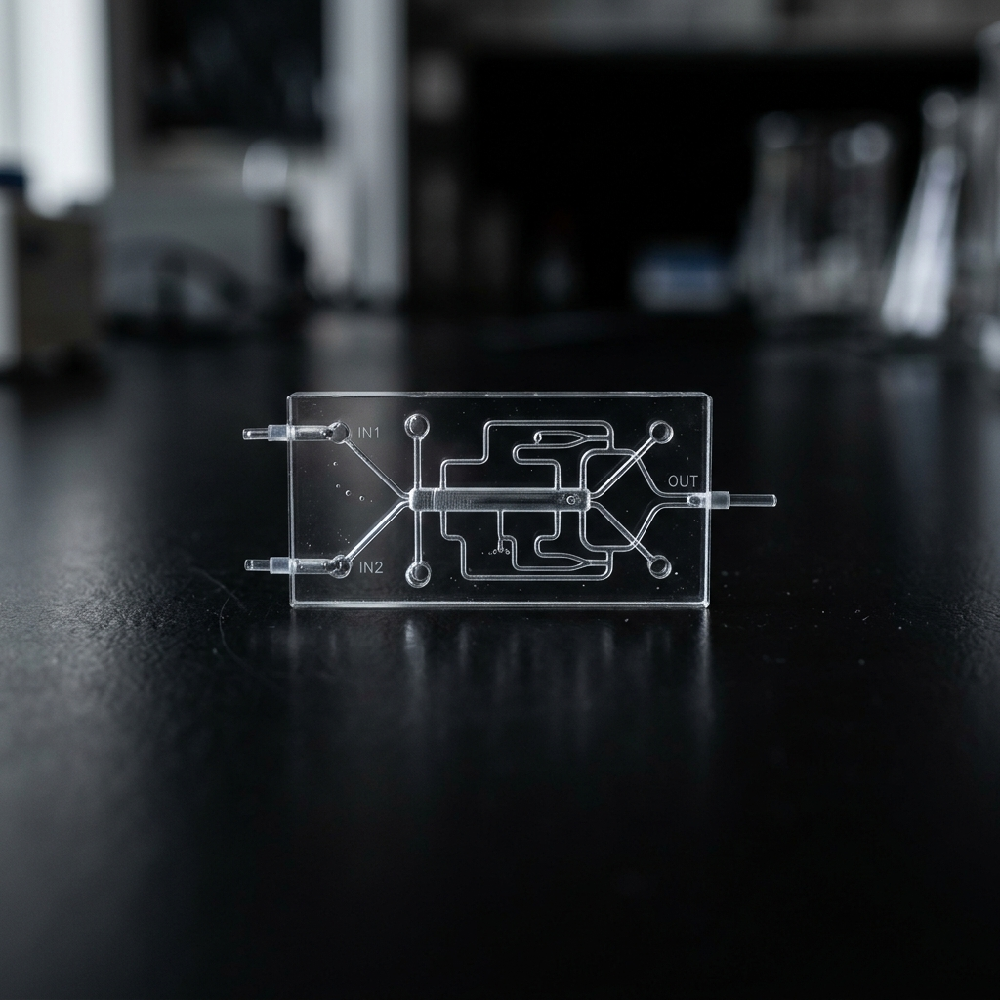

The Power of Whitespace in Minimalist Web Design
An examination of how empty space shapes user experiences, creates visual hierarchy, and lets high-quality design breathe. In a world full of clutter, silence is the ultimate luxury.

Camera in Hand: Exploring Shadows and Light
Observations on capturing street geometry, light shafts, and high-contrast black-and-white forms in urban landscapes. A study in finding beauty in the overlooked corners.

Writings & Platforms: Code as a Medium
Why self-publishing on a custom-built, lightweight website is a statement of ownership and simplicity in the modern web ecosystem. Moving away from corporate platforms to static pages.

Designing for Scale: Modular Hardware Architectures
An overview of principles for developing scalable and modular microfluidic platforms, facilitating rapid prototyping and assembly of custom biological assays.
The Mechanics of Flow: Fluid Dynamics in Microscale
An exploration of laminar flow, diffusion, and fluid behavior in microfluidic channels. Understanding how physics shifts when scaled down to the micron level.
Single-Cell Sorting: Abstract Patterns of Selection
A deep dive into automated microfluidic cell isolation systems, analyzing cell sorting efficiency, precision, and the visual geometry of micro-scale cellular patterns.